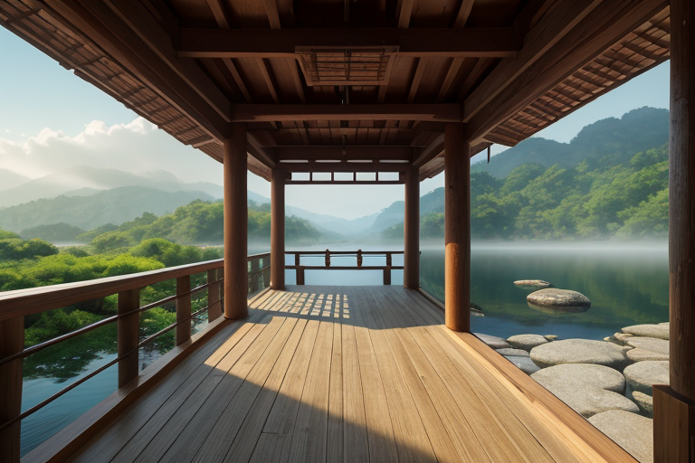
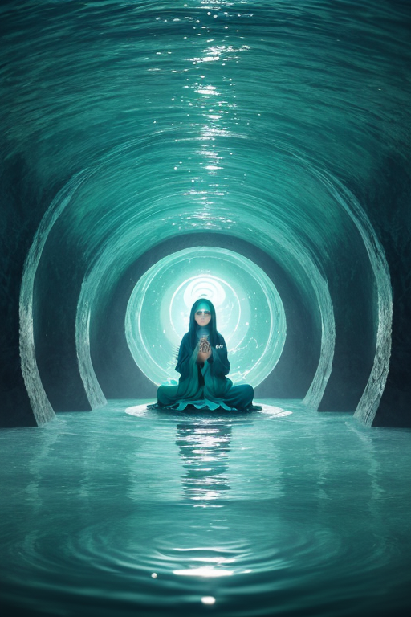
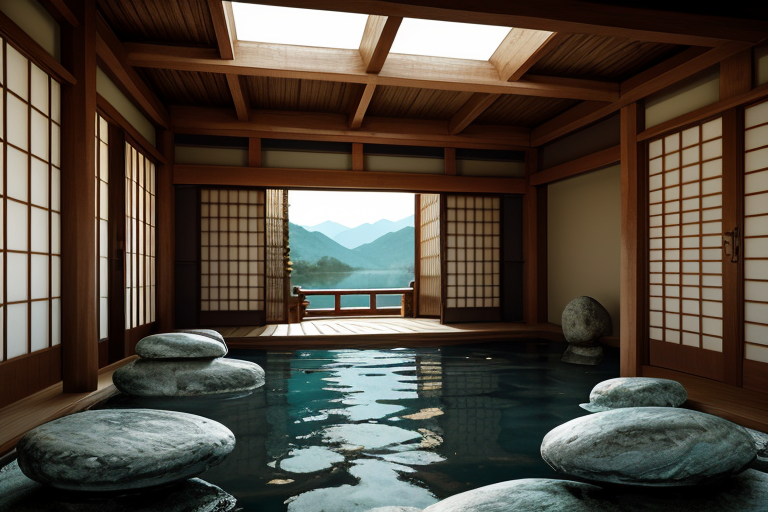
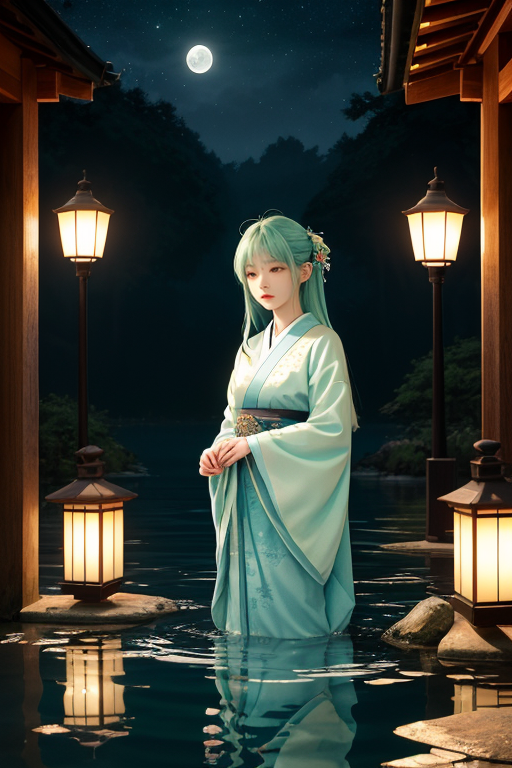

第一章 現実の滋賀
あなたはまだ気づいていない。この土地にも、王がいることを。
比叡山延暦寺の根本中堂。不滅の法灯の前で、人々は息を潜める。千二百年、絶えることのない炎は、ここでしか見られない静寂を生み出していた。その静けさは、山肌を伝い、琵琶湖の水面に降りていく。湖はすべてを映し、すべてを飲み込む。竹生島の宝厳寺では、湖面を渡る風が鈴を鳴らし、祈りを運ぶ。近江八幡の水郷をゆく舟の櫂の音、彦根城の石垣に刻まれた時の痕跡。それらはすべて、この土地の「静律」――記静域という世界線の基調を成している。
ここでは、記憶が空気のように濃密に存在する。近江商人の「三方よし」の精神、信楽焼の土に封じ込められた炎の記憶、鮒寿司という時間そのものを食す文化。それらは流れるようで、確かに留まっている。湖は水を湛え、入れ替わりながら、その底には膨大な沈殿物を抱え続ける。
その沈殿の最深部で、青と水色の紋章が微かに脈打っていた。湖円と幾重にも重なる波紋層。それは、この土地のすべての記憶と静寂を司る、ただ一人の王の証であった。

第二章 歪みの兆候
比叡山延暦寺の根本中堂で、不滅の法灯が揺れた。それは物理的な風によるものではなかった。祈りという名の、千年分の記憶の堆積層に、微かな乱れが生じたのだ。山肌を伝い、湖面に降り注ぐ無数の願いの密度が、ほんの一瞬、不均一になった。それは、遠く離れた海底のプレートが軋む、巨大な歪みの最初のさざ波であった。
湖底の王座で、オウミリア・メモリアは静かに目を開けた。彼の視界には、琵琶湖の水そのものが記憶の媒体として映る。今、湖を満たす無色透明な祈りの水に、ごく薄い濁りが走った。留まるべき記憶の層序が、流れようとする力に押され、かすかに乱れる。
「揺れが来ます」
主席妖精メモリアルが、優しい、しかし緊張を帯びた声で告げた。彼女の手には、沈殿しきれない人々の不安や恐れが、微細な粒子となって漂っていた。
「規模は…大きい。しかし、正確な時間と方向は、祈りの波紋が乱れており、定かではありません」
王は答えず、湖底に広がる自らの紋章を見つめた。波紋は、本来同心円を描くべきところが、東南の一角で僅かに歪んでいる。留まろうとする記憶と、流れようとする現実。その狭間で、次の瞬間が形作られようとしていた。

第三章 王の葛藤
竹生島の宝厳寺の暗がりで、オウミリア・メモリアは目を閉じた。湖底から伝わる歪みの予感は、過去に幾度か触れたものより重い。比叡山の僧侶たちの祈りも、近江商人たちの計算も、この重さを完全には相殺できない。
「留まりたいのですか」
自問する声は、湖面に落ちた水滴のように消えた。記憶を留めることは、この国の人々が繰り返し行ってきた営みだ。鮒寿司に込めた保存の知恵、信楽焼が伝える不変の形、延暦寺に連なる灯。彼はそれらを愛していた。しかし、歪みとは流れるものだ。琵琶湖の水が淀まず海へ向かうように、地の圧力もまた、留まることを知らない。
主席妖精メモリアルが沈殿させた人々の不安は、王の内側でゆっくりと循環した。それは郷愁という名の感情を増幅させた。全てを静かな過去のように留めておきたい。だが、王の役目は、流れを完全に止めることではない。流れを調整し、その勢いを一寸だけ緩めることだ。
湖底の紋章の歪みが、一瞬、強く脈打った。

第四章 妖精との対話
竹生島の宝厳寺、暗がりの回廊。メモリアルは、賽銭箱の前で合掌する老婦人の背後に、静かに立っていた。彼女の肩から漂う、遠くの息子を案じる切なさを、そっと受け止める。
「祈りは、流れる記憶の形です」メモリアルは、湖面に映る月のように、声を立てずに語る。「留めようとする思いが、かたちを変えて、水のように流れ出る。私たちは、その流れが澱まないよう、静かに見守るだけです」
比叡山の鐘の音が、湖を渡って届く。それは千年の祈りが層をなした、時間そのものの響きだった。
「全てを留めることはできません。でも」メモリアルは、老婦人の背中に、微かな青い光を纏わせた。「流れを一寸、緩やかにすることはできます。激しい波を、静かな波紋に。それが、この土地の『静律』です」
祈りは終わり、老婦人は安らかな息をついて立ち上がった。彼女の足取りには、さっきまでの重さが消えていた。澱んだ感情は沈殿し、浄化され、湖の底深く、静かな記憶の層へと還っていく。
第五章 微調整と余韻
琵琶湖の水面は、夕陽を受けて静かに輝いていた。オウミリア・メモリアは、彦根城の天守からその光景を眺めている。今日も、幾つかの悲しみや焦りが、妖精たちによって湖へと導かれ、沈殿し、浄化された。彼女自身の内側にも、微かな郷愁の波紋が、静かに広がっては消える。
彼女は何も消さない。消すことは、記憶そのものの否定だ。彼女が行うのは、ほんの少しの「間」の調整である。感情の激流が人を押し流す寸前に、一呼吸の余白を挿入する。怒りの鋭さを、哀しみの深さを、そのままに保ちながら、人がそれと向き合えるほどの「静けさ」で包む。比叡山の僧侬が坐禅で無になろうとするのとは逆に、彼女は「有るもの」を、そのまま在らしめるための静寂を生み出す。
近江商人の「三方良し」の精神は、目に見えない損得の調整にも通じる。自分良し、相手良し、世間良し。それは、感情の均衡でもあった。オウミリア・メモリアの調整は、目に見えず、記録にも残らない。ただ、ふと肩の力が抜けたり、昨日まで呪っていた過去を、少し離れて眺められるようになったりする。それは、湖がすべてを飲み込み、時間をかけて澄ませていくように。
彼女は城を下り、湖岸を歩く。足元に、信楽焼の欠片が転がっている。かつては器だったものが、壊れ、磨かれ、ただの土片となってここにある。全ては流れ、変容する。しかし、その欠片が在るという「記憶」は、確かに留まっている。流れることと留まることは、背反しない。湖のように、深く静かな均衡の中で、両方在り続けるのだ。
あなたの町にも、王がいる。